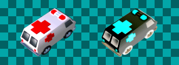

sprite_invert_color

This script will permanently change the colors of a sprite resource to inverted colors, eg. black to white, yellow to blue, etc. It is a can be a slow process, especially for large sprites or sprites with many frames.
For scripts which can draw sprites inverted in real-time, see draw_sprite_inverted() and draw_sprite_inverted_ext().
- sprite_invert_color(sprite)
- Inverts the colors of a given sprite.
/// sprite_invert_color(sprite)
//
// Inverts the colors of a given sprite. No new sprites are
// created, the given sprite is change. Returns (-1) on error.
//
// sprite sprite to change
//
/// GMLscripts.com
{
var sprite,w,h,n,xo,yo,surf,a,i,newsprite,alphasprite;
sprite = argument0;
w = sprite_get_width(sprite);
h = sprite_get_height(sprite);
n = sprite_get_number(sprite);
xo = sprite_get_xoffset(sprite);
yo = sprite_get_yoffset(sprite);
surf = surface_create(w,h);
if (surf < 0) return -1;
surface_set_target(surf);
a = draw_get_alpha();
draw_set_alpha(1);
for (i=0; i<n; i+=1) {
draw_clear_alpha(c_white,1);
draw_set_blend_mode_ext(bm_zero,bm_inv_src_color);
draw_sprite(sprite,i,xo,yo);
draw_set_blend_mode(bm_add);
draw_rectangle_color(0,0,w,h,c_black,c_black,c_black,c_black,false);
if (i == 0) {
newsprite = sprite_create_from_surface(surf,0,0,w,h,false,false,xo,yo);
if (newsprite < 0) {
surface_free(surf);
return -1;
}
}else{
sprite_add_from_surface(newsprite,surf,0,0,w,h,false,false);
}
draw_clear_alpha(c_white,1);
draw_set_blend_mode_ext(bm_zero,bm_src_alpha);
draw_sprite(sprite,i,xo,yo);
if (i == 0) {
alphasprite = sprite_create_from_surface(surf,0,0,w,h,false,false,xo,yo);
if (alphasprite < 0) {
sprite_delete(newsprite);
surface_free(surf)
return -1;
}
}else{
sprite_add_from_surface(alphasprite,surf,0,0,w,h,false,false);
}
draw_set_blend_mode(bm_normal);
}
draw_set_alpha(a);
surface_reset_target();
sprite_assign(sprite,newsprite);
sprite_set_alpha_from_sprite(sprite,alphasprite);
sprite_delete(newsprite);
sprite_delete(alphasprite);
surface_free(surf);
return 0;
}
Contributors: xot
GitHub: View · Commits · Blame · Raw